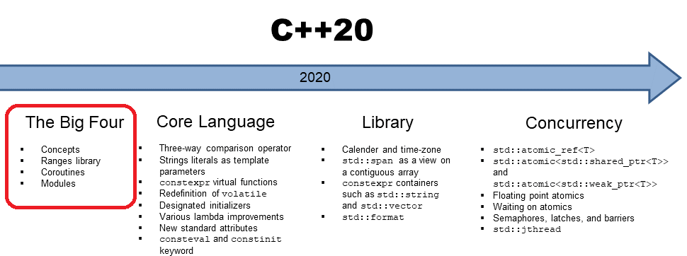

Operator <=>()
auto for function parametersstd::formatconstinit, consteval, and Compile-Time Computing
for Loop with Initializationusing for Enumeration Valueschar8_t and std::u8string [[likely]] and [[unlikely]][[no_unique_address]]typename for Type Members of Template Parametersexplicit
C++20 draft (post Prague, March 2020 draft): https://timsong-cpp.github.io/cppwp/n4861/
compiler support at C++ Reference: https://en.cppreference.com/w/cpp/compiler_support#cpp20
comparison of changes between C++17 and C++20: P2131 by Thomas Köppe
Operator <=>()http://wg21.link/p0768r1, http://wg21.link/p1185r2 and http://wg21.link/p1630r1
Before C++20 you had to define six operators (operator==, operator!=, operator<, operator<=, operator>, operator>=) for a type to provide full support for all possible comparisons of its objects.
Every type should either
==, !=, <, <=, >=, > (ordering)==, != (equality)Copying and equality is closely related. What is compared should be a subset of what is copied (in copy constructor)
Since C++20:
Operator== Implies Operator!=
When the compiler finds no implementation for an expression a!=b, the compiler will try below expressions, in order.
a != b // tries: a!=b, !(a==b), and !(b==a)
default operator<=>()
by declaring an operator<=> with =default, compiler generates an implicit member operator==. Both default operators compare objects member by member. This means that the order of the members matters.
class Value {
...
auto operator<=> (const Value& rhs) const = default; // return type is one of Comparison Category, eg, std::strong_ordering. implicit constexpr.
auto operator== (const Value& rhs) const = default; // implicitly generated, return type: bool, implicit constexpr.
};
Value a, b;
a < b ; // compiler converts to a.operator<=>(b) < 0
a >= b; // compiler converts to a.operator<=>(b) >= 0
Simple user-defined operator<=>()
When user defines a user-defined opeartor<=>, the equality operator operator== is not implicitly generated anymore. User has to provide its own operator==, otherwise it won't compile when you check equality. The reason is compiler doesn't want to imply == from <=> as == can potentially be more efficiently implemented (such as when comparing two ranges).
#include <compare>
class Value {
private:
long id;
//...
public:
constexpr Value(long i) noexcept
: id{i} {
}
// for equality operators:
bool operator== (const Value& rhs) const {
return id == rhs.id; // defines equality (== and !=)
}
// for relational operators:
auto operator<=> (const Value& rhs) const {
return id <=> rhs.id; // defines ordering (<, <=, >, and >=)
}
};
Comparison Category (defined in header <compare>):
std::strong_ordering: a value of a given type is either less than or equal to or greater than any other value. Typical example: integer types and string types.std::weak_ordering: a value of a given type is either less than or equivalent to or greater than any other value. Equivalent values do not have to be equal. Example: case-insensitive strings. "hello" and "HELLO" are equivalent but not equal.
std::partial_ordering: a value of a given type could either be less than or equivalent to or greater than any other value of this type.
You can think of the comparsion category as below conceptually (not how it is really implemented):
enum class weak_ordering { // this type can only compare with 0
less = -1,
equivalent = 0,
greater = 1
}
enum class strong_ordering { // this type can only compare with 0
less = -1,
equal = 0,
equivalent = 0,
greater = 1
}
The new operator <=> returns a value of one of the comparison category types, representing the result
of the comparison combined with the information whether this result is able to create a strong/total, weak, or partial ordering.
int x = 17, y = 42;
x <=> y // yields std::strong_ordering::less
x <=> 17.0 // yields std::partial_ordering::equivalent
&x <=> &x // yields std::strong_ordering::equal
&x <=> nullptr // ERROR: relational comparison with nullptr not supported
std::string{"hi"} <=> "hi" // yields std::strong_ordering::equal;
std::pair{42, 0.0} <=> std::pair{42, 7.7} // yields std::partial_ordering::less
user-defined operator<=>() with comparsion category
if all sub-comparsions have same comparsion categories, we can use auto return.
auto operator<=> (const Person& rhs) const {
auto cmp1 = lastname <=> rhs.lastname; // primary member for ordering
if (cmp1 != 0) return cmp1; // return result if not equal
auto cmp2 = firstname <=> rhs.firstname; // secondary member for ordering
if (cmp2 != 0) return cmp2; // return result if not equal
return value <=> rhs.value; // final member for ordering
}
If sub-comparsions have different comparsion categories, we need to return to weekeast comparsion type.
std::partial_ordering operator<=> (const Person& rhs) const { // OK
auto cmp1 = name <=> rhs.name;
if (cmp1 != 0) return cmp1; // strong_ordering converted to return type
return value <=> rhs.value; // value is double here, partial_ordering used as the return type
}
If we don't know the comparsion type (eg. type is a template parameter) you can use a new type
trait std::common_comparison_category<> that computes the strongest comparison category
auto operator<=> (const Person& rhs) const // OK
-> std::common_comparison_category_t<decltype(name <=> rhs.name),
decltype(value <=> rhs.value)> {
auto cmp1 = name <=> rhs.name;
if (cmp1 != 0) return cmp1; // used as or converted to common comparison type
return value <=> rhs.value; // used as or converted to common comparison type
}
If you want to force the std::strong_ordering return, C++ standard library provides some helper function. eg, to map floating-point
values you can call std::strong_order() for the two values to compare.
std::strong_ordering operator<=> (const Person& rhs) const {
auto cmp1 = name <=> rhs.name;
if (cmp1 != 0) return cmp1; // return strong_ordering for std::string
// value is double here, map floating-point comparison result to strong ordering:
return std::strong_order(value, rhs.value);
}
Note that std::string, for the sake of performance, has a custom implemented operator== (provides == and !=) and operator<=> (provides the rest). All comparisons are done via the compare() member function (which itself is defined in terms of Traits::compare()):
https://en.cppreference.com/w/cpp/string/basic_string/operator_cmp
To compile
x != ythe compiler now might try all of the following:
x.operator!=(y) // calling member operator!= for x
operator!=(x, y) // calling a free-standing operator!= for x and y
!x.operator==(y) // calling member operator== for x, rewrite as !(x==y)
!operator==(x, y) // calling a free-standing operator== for x and y, rewrite as !(x==y)
// If an implicit type conversion for the first operand x (to v) is necessary
operator!=(v, y) // calling a free-standing operator!=
!operator==(v, y) // calling a free-standing operator==
!y.operator==(v) // calling member operator== for y
An example:
struct Point {
int x, y;
constexpr bool operator=(int rhs) const
{ return rhs == x && rhs == y; }
};
constexpr Point a{3, 3};
static_assert(b==3); // always works
static_assert(3==b); // Doesn't work before, works since C++20
To compile
x <= yThe compiler now might try all of the following
x.operator<=(y) // calling member operator<= for x
operator<=(x, y) // calling a free-standing operator<= for x and y
x.operator<=>(y) <= 0 // calling member operator<=> for x
operator<=>(x, y) <= 0 // calling a free-standing operator<=> for x and y
0 <= y.operator<=>(x) // calling member operator<=> for y, this form is to support an implicit type conversion for the first operand, for which it has to become a parameter.
Guideline: In C++20, make comparsion operator overloads member functions:
friend neededauto for function parametersSince C++20, you can use placeholders such as auto for all functions (including member functions and operators)
void printColl(const auto& coll) // generic function
{
...
}
// above is a shortcut to declare/define a template such as the following:
template<typename T>
void printColl(const T& coll) // equivalent generic function
{
...
}
// member function with auto parameter
class MyType {
...
void assign(const auto& newVal);
};
// is equivalent to:
class MyType {
...
template<typename T>
void assign(const T& newVal);
};
auto function vs lambda
auto function is really just function template.
concepts are a milestone for C++, because concepts provide a language feature for something we need a lot when writing generic code: specifying requirements.
To specify requirements for template parameters you need constraints. It is a Boolean expression that evaluates to true or false at compiler time. It can be
requires expressions specifying required operations and typesconcept)The basic application of a constraint is a requires clause
// use && to combine multiple constraints
template<typename T>
requires (sizeof(T) > 4) // ad-hoc Boolean expression
&& requires { typename T::value_type; } // requires expression
&& std::input_iterator<T> // concept
// use || to express "alternative" constraints (alternative constraints is rarely needed and should not be done too casually because it may slow down compilation noticeably)
template<typename T>
requires std::integral<T> || std::floating_point<T>
T power(T b, T p);
Boolean Expressions
The first way to formulate constraints for templates is to use compile-time expressions that convert to true or false. Typically, they are:
constexpr or constinit const)constexpr or consteval)Some examples:
template<typename T>
requires (sizeof(T) <= 64) //
template<typename T>
requires (std::is_pointer_v<T> || std::same_as<T, std::nullptr_t>) // raw pointers or nullptr
template<typename T>
requires (std::is_pointer_v<T> || std::is_same_v<T, std::nullptr_t>) // same as above
// if the argument cannot be used as a string
template<typename T>
requires (!std::convertible_to<T, std::string>) // std::convertible_to is a concept introduced in C++20
template<typename T>
requires (!std::is_convertible_v<T, std::string>) // std::is_convertible is type_trait since C++17, "_v" is introduced in C++17
template<typename T>
requires std::integral<std::remove_reference_t<decltype(*std::declval<T>())>> // if the argument is a pointer-like object to an integral value
template<typename T>
constexpr bool gcd(T a, T b); // greatest common divisor (forward declaration)
template<typename T, int Min, int Max>
requires (gcd(Min, Max) > 1) // available if there is a GCD greater than 1
template<typename T>
requires false // disable the template
requires Expressions
Requires expressions (which are distinct from requires clauses) provide a simple but flexible syntax to specify multiple requirements on one or multiple template parameters.
A requires expression starts with requires followed by an optional parameter list and then a block of
requirements (all ending with semicolons).
The optional parameter list allows you to introduce a set of “dummy variables” usable to express requirements in the body of the requires expression. These parameters are never replaced by arguments. Therefore, it usually does not matter whether you declare them by value or by reference.
template<typename T>
... requires (T x, T y) {
x + y; // supports +
x - y; // supports -
}
Simple requirements are just expressions that have to be well-formed. That means the calls have to compile.
The calls are not performed, so it does not matter whether the operations have defined behavior or yield true.
template<typename T1, typename T2>
... requires(T1 val, T2 p) {
*p; // operator* has to be supported for T2
p[0]; // operator[] has to be supported for int as index
p->value(); // calling a member function value() without arguments has to be possible
*p > val; // support that we can compare the result of operator* with T1
// This does not require that p is the nullptr (to require that, you have to check whether T2 is type
std::nullptr_t).
// Instead, we require that we can compare an object of type T2 with an object of type std::nullptr_t.
p == nullptr; // support that we can compare a T2 with a nullptr
}
Another Example:
// OOPS: does not require T to be integral.
// It only requires that the expression std::integral<T> is valid, which is the case for all types.
template<typename T>
... requires {
std::integral<T>; // OOPS
};
// Instead, you should do below
template<typename T>
... std::integral<T> && // OK, does require T to be integral
requires {
...
};
// OR
template<typename T>
... requires {
requires std::integral<T>; // OK, does require T to be integral
...
};
Type requirements are expressions that have to be well-formed when using a name of a type. That means the specified name has to be defined as a valid type.
template<typename T1, typename T2>
... requires {
typename T1::value_type; // type member value_type required for T1
typename std::ranges::iterator_t<T1>; // iterator type required for T1
typename std::ranges::iterator_t<std::vector<T1>>;
typename std::common_type_t<T1, T2>; // T1 and T2 have to have a common type
}
Note it doesn't make sense (useful) to check for other type declarations using the type.
template<typename T>
concept StdHash = requires {
typename std::hash<T>; // does not check whether std::hash<> is defined for T
};
// The way to do that is to try to create or use it:
template<typename T>
concept StdHash = requires {
std::hash<T>{}; // OK, checks whether we can create a standard hasher for T
};
template<typename T>
... requires {
typename std::remove_const_t<T>; // not useful: always valid (yields a type)
}
template<typename T>
... requires {
std::is_const_v<T>; // not useful: always valid (doesn’t matter what it yields)
}
Compound requirements allow us to combine the abilities of simple and type requirements. In this case you can specify an expression (inside a block of braces) and then add one or both of the following:
noexcept to require that the expression guarantees not to throw-> type-constraint to apply a concept on what the expression evaluates toSome examples:
template<typename T>
... requires(T x) {
// require that the concept std::input_or_output_iterator is satisfied when using operator& for an object of type T
{ &x } -> std::input_or_output_iterator;
{ x == x }
// require that we can use the result of operator== for two objects of type T as bool
{ x == x } -> std::convertible_to<bool>;
{ x == x }noexcept
{ x == x }noexcept -> std::convertible_to<bool>;
}
template<typename T>
... requires(T coll) {
{ *coll.begin() } -> std::convertible_to<T::value_type>;
}
By defining a concept you can introduce a name for one or more constraints.
Templates (function, class, and variable templates) can use concepts to constrain their ability (via a requires clause or as a direct type constraint for a template parameter).
boolean variable template vs. concept
Concepts are much like constexpr variable templates of type bool, at compile-time or runtime you can always use a concept where the value of a Boolean expression
is needed.
template<typename T>
inline constexpr bool IsOrHasThisOrThat = ... ;
template<typename T>
concept IsOrHasThisOrThat = ... ;
template<IsOrHasThisOrThat T>, while variable templates cannot be used that way.Where can concepts be used
concepts can be used as type constraints. There are different places where type constraints can be used:
template<std::integral T> // type constraint for a template parameter
class MyClass {
...
};
auto myFunc(const std::integral auto& val) { // type constraint for an auto parameter
...
};
template<typename T>
concept MyConcept = requires(T x) {
{ x + x } -> std::integral; // type constraint for return type
};
Type constraints can be used in all places where auto can be used:
std::integral auto val1 = 42; // OK
for (const std::integral auto& elem : coll) { ... }
// To constrain return types
std::integral auto foo() { ... }
// to constrain non-type template parameters:
template<typename T, std::integral auto max>
class SizedColl { ... };
// another example
template<typename T, std::convertible_to<T> auto default>
class MyType { ... };
Constraints and Concepts Subsume
Two concepts can have a subsuming relation. That is, one concept can be specified that it restricts one or more other concepts. The benefit is that overload resolution then prefers the more constrained generic code
template<typename T>
concept GeoObject = requires(T obj) {
{ obj.width() } -> std::integral;
{ obj.height() } -> std::integral;
obj.draw();
};
template<typename T>
concept ColoredGeoObject =
GeoObject<T> && // subsumes concept GeoObject
requires(T obj) { // additional constraints
obj.setColor(Color{});
{ obj.getColor() } -> std::convertible_to<Color>;
};
template<GeoObject T>
void process(T) { ... } // called for objects not providing setColor() and getColor()
template<ColoredGeoObject T>
void process(T) { ... } // called for objects providing setColor() and getColor()
subsumptions is only evaluated among concepts, overloading with different constraints is ambiguous if no concepts are used.
// When using constraints (with boolean expression)
template<typename T>
requires std::is_convertible_v<T, int>
void print(T) { ... }
template<typename T>
requires (std::is_convertible_v<T, int> && sizeof(int) >= 4)
void print(T) { ... }
print(42); // ERROR: ambiguous (if both constraints are true)
// When using concepts instead, this code works:
template<typename T>
requires std::convertible_to<T, int>
void print(T) { ... }
template<typename T>
requires (std::convertible_to<T, int> && sizeof(int) >= 4)
void print(T) { ... }
print(42); // OK
C++20 standard library provides a bunch of pre-defined concepts.
Almost all concepts are defined in header <concepts>, which is included by <ranges> and <iterator>.
The only exceptions are:
std::three_way_comparable concepts, which are defined in <compare> (which is included by almost every
other header file)std::uniform_random_bit_generator, which is defined in <random>Almost all concepts are defined in namespace std. The only exception are the ranges concepts, which are
defined in namespace std::ranges.
C++20 introduces the concept of a range, which is a single object representing a sequence of values, and you can pass the range as a whole as a single parameter.
C++20 provides several new features to deal with ranges:
To use ranges,
std::ranges. This is necessary to avoid ambiguities and conflicts with existing APIs.std::ranges#include <ranges>
namespace rng = std::ranges;
std::vector<int> coll;
rng::sort(coll);
views
To deal with ranges, C++20 also introduces views. Views are lightweight ranges that
The view provides the usual API of range so that begin(), end(), and operator++ can be used to iterate over the elements and operators * and -> can be used.
Views have their own namespace, std::ranges::views, for which the namespace alias std::views is defined:
namespace std {
namespace views = ranges::views;
}
Below examples use the range adaptor std::views::take() to create a view. Range adaptors are helper functions defined in namespace std::views that creates views.
// use a view to iterate only over the first 5 elements of a range:
for (const auto& elem : std::views::take(coll, 5)) { ... }
// a view can also be used to sort only the first 5 elements:
std::ranges::sort(std::views::take(coll, 5)); // sort the first 5 elements of coll
// a view can also generate a sequence of values themselves.
// For example, with the iota view, we can iterator over all values from 1 to 10 as follows:
for (int val : std::views::iota(1, 11)) {...}
views enable using operator | to pipe in the underlying range that should be processed
// view with elements of coll that are multiples of 3:
std::views::filter(coll, [] (auto elem) {
return elem % 3 == 0;
})
// view with squared elements of coll:
std::views::transform(coll, [] (auto elem) {
return elem * elem;
})
// view with first 3 elements of coll:
std::views::take(coll, 3)
// view with first 3 squared values of of the elements in coll that are multiples of 3:
auto v = coll
| std::views::filter([] (auto elem) { return elem % 3 == 0; })
| std::views::transform([] (auto elem) { return elem * elem; })
| std::views::take(3);
// Another example:
// iterate over the names of the first 3 composers born since 1700:
std::map<std::string, int> composers;
for (const auto& elem : composers
| vws::filter([](const auto& y) { // since 1700
return y.second >= 1700;
})
| vws::take(3) // first 3
| vws::keys // keys/names only
)
views and const
When using views (and the ranges library in general), there are a few thing that are surprising or even broken regarding constness:
cbegin() and cend(), which have the goal to ensure that elements are const while iterating over them, are either not provided or even broken.
Containers have deep constness. Because they have value semantics and own their elements, they propagate any constness to their elements. When a containers is const, its elements are const.
Views have shallow constness. Because they have reference semantics as they only refer to elements stored somewhere else and usually do not own any elements or values. As a consequence, views do not propagate constness to their elements.
Example:
template<typename T>
void constfunc(const T& range) {
range.front() += 1; // modify an element of a const range
}
std::array<int, 10> coll{}; // array of 10 ints with value 0
constfunc(coll); // compile-time ERROR
std::ranges::take_view tv{coll, 5}; // view to first 5 elements of coll
constfunc(tv); // OK, modifies the first element of coll
for (auto pos = std::cbegin(range); pos != std::cend(range); ++pos) {
elemfunc(*pos); // !!! does not provide constness for the values
}
for (auto pos = std::ranges::cbegin(range); pos != std::ranges::cend(range); ++pos) {
elemfunc(*pos); // !!! does not provide constness for the values
}
// Instead, we should do
for (const auto& elem : range) { // using const in the range-based for loop:
...
}
for (auto pos = range.begin(); pos != range.end(); ++pos) {
elemfunc(std::as_const(*pos)); // passing elements converted to const
}
sentinels
C++20 introduces a new term, sentinels, which represent the end of a range.
Unlike STL end iterator, range sentinels doesn't have to be the same type as iterators iterating over the collection. They can signal “until '\0'”, “until EOF”, or until any other value.
subrange
The subrange class template combines together an iterator and a sentinel into a single view. A subrange can be defined with:
A subrange is the generic type that can be used to convert an iterator and a sentinel into a single object representing it as a view. That means subranges have reference semantics and are cheap to copy them around.
// define an end iterator sentinel
struct NullTerm {
// Note this is C++20 auto template function
bool operator== (auto pos) const {
return *pos == '\0'; // end is where iterator points to \verb+'\0'+
}
};
int main()
{
const char* rawString = "hello world";
// Using Sentinels Directly
// iterate over the range of the begin of rawString and its end:
for (auto pos = rawString; pos != NullTerm{}; ++pos) {
std::cout << ' ' << *pos;
}
// call range algorithm with iterator and sentinel:
std::ranges::for_each(rawString, // begin of range
NullTerm{}, // end is null terminator
[] (char c) {
std::cout << ' ' << c;
});
// define a sub-range of a raw string and a null terminator:
std::ranges::subrange rawStringRange{rawString, NullTerm{}};
std::ranges::for_each(rawStringRange,
[] (char c) {
std::cout << ' ' << c;
});
std::cout << '\n';
// range-based for loop also supports iterator/sentinel:
for (char c : rawStringRange) {
std::cout << ' ' << c;
}
std::cout << '\n';
}
Projections
sort() and many other algorithms for ranges usually have an additional optional template parameter, a
projection: it allows you to specify a transformation (projection) for each element
before the algorithm processes it further.
The default projection is std::identity(), which yields a passed argument as is (it is defined as a
function object in <functional>).
std::ranges::sort(coll,
std::ranges::less{}, // still compare with <
[] (auto val) { // projection: use the absolute value
return std::abs(val);
});
//This might be more readable or easier to program than:
std::ranges::sort(coll,
[] (auto val1, auto val2) {
return std::abs(val1) < std::abs(val2);
});
Range Adaptors
C++ provides several range adaptors to easily create views with the best performance.
some major range adaptors:
std::views::all(), which is the primary adaptor to yield a view for a passed rangestd::views::counted(), is the primary adaptor to convert a begin and a count into a viewstd::views::common(), which yields a view with harmonized types for the begin iterator and the
sentinel (end iterator) to be able to pass the range/view to traditional range parametersAll these major adaptors always yield a borrowed range. That is, the lifetime of iterators from these adaptors only depends on the lifetime of the argument passed to them. In other words: Using these adaptors does not introduce additional lifetime issues.
Objects of type std::span<> refer to external sequences of elements. All elements have to be stored one
after another in contiguous memory.
A span object is in fact just as raw pointer to a sequence of elements combined with a size for the number
of elements. Using a span is cheap and fast (you should always pass it by value). However, it is also potentially dangerous because it is up to the programmer to ensure that the referred element sequence is still valid when using a span.
A span where the number of elements might change is called a span with dynamic extent.
Modules provide a way to combine code from multiple files into one logical entity (module, component). As a side effect, it is possible to ensure that module code does not have to be compiled multiple times.
Modules allow programs to define an API that might consist of multiple classes, multiple files, several functions, and various auxiliary utilities including templates.
Each module must have exactly one primary module interface unit file with its specified name.
export.C++ modules do not automatically introduce a namespace for a module. You can add namespace in the module file, the namepsace symbol will be exported even not marked with export.
// file: mod0.cppm // note, there is no require of module file naming and extension.
export module Square; // declare module Square. This is the key entry for the primary module interface.
int square(int i);
export class Square {
private:
int value;
public:
Square(int i)
: value{square(i)} {
}
int getValue() const {
return value;
}
};
export template<typename T>
Square toSquare(const T& x) {
return Square{x};
}
int square(int i) {
return i * i;
}
// file: main.cpp
#include <iostream>
import Square; // import module “Square”
int main()
{
Square x = toSquare(42);
std::cout << v.getValue() << '\n';
}
Not visible but reachable
Symbols that are reachable but not visible can occur, when an exported API provides access to a type that is not exported.
Exampe:
export module ModReach; // declare module ModReach
struct Data { // declare a type not exported
int value;
};
export struct Customer { // declare an exported type
private:
Data data;
public:
Customer(int i)
: data{i} {
}
Data getData() const { // yield not exported type
return data;
}
};
import ModReach;
Data d{11}; // ERROR: type Data not exported
Customer c{42};
const Data& dr = c.getData(); // ERROR: type Data not exported
const auto& dr = c.getData(); // OK: type Data is used
auto d = c.getData(); // OK: d has type Data
std::cout << d.value << '\n'; // OK: type Data is used
//You can even declare an object of type Data as follows:
decltype(std::declval<Customer>().getData()) d; // d has non-exported type Data
The purpose of modules is to deal with code of significant size distributed over multiple files.
In general modules consist out of multiple module units. Module units are translation units that belong to a module. we have different ways to split a module into multiple files:
// file: mod1.cppm
module; // start module unit with global module fragment
// a global module fragment where we can place preprocessor commands like #define and #include. Everything from this area is not exported
#include <string>
#include <vector>
export module Mod1; // The main module declaration.
struct Order {
...
};
export class Customer {
...
double sumPrice() const;
void print() const;
};
Example of a module implementation unit. You can have multiple separate cpp files to define some other implementation as well.
// file: mod1price.cpp
module Mod1; // implementation unit of module Mod1, this indicates it is a module unit.
// This declaration implicitly imports the primary module interface (but nothing else).
double Customer::sumPrice() const
{
... // implementation
}
With internal partitions (sometimes called partition implementation units), you can define internal stuff of a module (such as Order class in above example) in separate files.
// file: mod2order.cppp // notice the extension
module; // start module unit with global module fragment
#include <string>
module Mod2:Order; // internal partition declaration
struct Order {
... class definition
};
// file: mod2.cppm
module; // start module unit with global module fragment
#include <string>
#include <vector>
export module Mod2; // main module declaration
// The primary module interface has to import the internal partition because it uses type Order in Customer class.
// If it doesn't, all module units that need Orders would have to import the internal partition directly.
import :Order; // import internal partition Order
export class Customer {
...
};
You can declare interface partitions to split the interface of a module in multiple files. Here we define the exported Customer interface in a separate module file.
// file: mod3customor.cppm
module; // start module unit with global module fragment
#include <string>
#include <vector>
// As a interface partition we declare its name after the module name and a colon: Mod3:Customer
export module Mod3:Customer; // interface partition declaration
import :Order; // import internal partition to use Order
export class Customer {
... // class definition
};
export module Mod3; // main module declaration
// By importing the partition interface and exporting it at the same time (you have to write both keywords).// , the primary module exports the interface of the partition Customer as its own interface:
export import :Customer; // import and export interface partition Customer
... // import and export other interface partitions
File extension and Compilation
We also have no standard extension for modules.
.cppm.
.cppp. The reason is:
.cpp.gcc/g++:
GCC does not require any special file extension or command-line option at all. So, by using special
file extensions, we have to specify that the files contain C++ code using the command-line option -xc++:
# Compile an interface file file.cppm as follows:
g++ -c -xc++ file.cppm
# Compile an internal partition file file.cppp as follows:
g++ -c -xc++ file.cppp
Clang:
Clang currently only supports interface files. As the proposed extension .cppm for them is required anyway, using it should just work.
However, you cannot use internal partition files.
Template Lambda
C++20 introduces an extension to be able to use template parameters for generic lambdas.
auto foo = []<typename T>(const T& param) { // OK since C++20
T tmp{}; // declare object with type of the template parameter
...
};
[]<typename T, int N>(T (&arr)[N]) { // OK since C++20
... // can use T as element type and N as size of the passed array
};
Explicit template parameters also help to avoid the need of decltype. For example, for perfect forwarding a generic parameter pack in a lambda you can write:
[]<typename... Types>(Types&&... args) {
foo(std::forward<Types>(args)...);
};
// instead of:
[] (auto&&... args) {
foo(std::forward<decltype(args)>(args)...);
};
You have to explicitly specify the template parameter if it can't be duduced. Example:
auto primeNumbers = [] <int Num> () {
std::array<int, Num> primes{};
... // compute and assign first Num prime numbers
return primes;
};
// initialize array with the first 20 prime numbers:
auto primes20 = primeNumbers.operator()<20>();
Default Constructor of Lambdas
Before C++20, lambda has no callable default constructor and assignment operator. Objects of the generated closure type could only be initially created by the compiler (copying is possible, though):
auto cmp1 = [] (const auto& x, const auto& y) { return x > y; }
auto cmp2 = cmp1; // OK, copy constructor supported
decltype(cmp1) cmp3; // ERROR until C++20: no default constructor provided
cmp1 = cmp2; // ERROR until C++20: no assignment operator provided
// The implication is, eg, to use lambda as `std::set` comparator, you have to pass the compiler-created lambda object in `std::set` constructor.
std::set<Customer, decltype(cmp1)> coll1{cmp1};
Since C++20, lambdas with no captures have a default constructor and an assignment operator, For this reason, it is now enough to pass the type of the lambda for the ordering criterion (or hashing function)
std::set<Customer, decltype(cmp1)> coll1; // OK since C++20, note no constructor parameter is needed.
// you can also embeded the lambda inside the declaration of the containe (with decltype).
std::set<Customer,
decltype([] (const Customer& c1, const Customer& c2) {
return c1.getName() < c2.getName();
})> coll3; // OK since C++20
consteval Lambdas
By using the new consteval keyword with lambdas, you can now require that lambdas become immediate functions so that “function calls” of them have to be evaluated at compile time.
auto hashed = [] (const char* str) consteval {
...
};
auto hashWine = hashed("wine"); // hash() called at compile time
constexpr const char* cs = "water";
auto hashWater = hashed(cs); // OK, called at compiler time
// any call has to happen at compile-time with values known at compile-time. Passing a runtime value is an error:
const char* s = "beer";
auto hashBeer = hashed(s); // ERROR
Capturing Parameter Packs
http://wg21.link/p0780r2, http://wg21.link/p2095r0.
Before C++20, you could capture parameter packs as follow:
template<typename... Args>
void foo(Args... args)
{
auto l1 = [&] {
bar(args...); // OK, capture by reference, you can't return the lambda
};
auto l2 = [args...] { // or [=]
bar(args...); // OK, it is capture by copy though
};
...
}
C++20 introduced init-captures for parameter packs
template<typename T>
void foo(T arg)
{
auto l3 = [arg = std::move(arg)] { // OK since C++14 for single argument
bar(arg); // OK
};
}
template<typename... Args>
void foo(Args... args)
{
auto l4 = [...args = std::move(args)] { // OK since C++20
bar(args...);
};
// You can also init-capture parameter packs by reference.
auto l5 = [&...fooArgs = args] { // OK since C++20
bar(fooArgs...);
};
}
std::formathttp://wg21.link/p0645r10, performance improvement: http://wg21.link/p2216r3.
C-style printf()
iostream
operator<< for custom typesstd::format
std::format_errorsprintf familyiostreamswhy is std::format so much faster
std::charconv for floating point conversions.{:L} specifier)errno#include <format>
std:cout << std::format("Read {} bytes from {}", n, "file.txt");
// positional placeholders
std:cout << std::format("Read {0} bytes from {1}", n, "file.txt");
try {
std::cout << std::format("{:.}", 5);
}
catch (const std::format_error& exception) {
std::cout << exception.what(); // "missing precision specifier"
}
std::format_to_n() writes to a preallocated array of characters, with both the buffer and its size specified.
std::format_to_n() does not write a trailing null terminator.std::format_to_n_result that has two members:
out for the position of the first character not writtensize for the number of characters that would have been written without truncating them to the passed
size.char buffer[64];
auto ret = std::format_to_n(buffer, std::size(buffer)-1, "String{} has {} chars\n", str, str.size());
*(ret.out) = `\0`;
std::format_to() with an output stream buffer iterator, you can write directly to a stream:
std::back_inserter() creates an object that calls push_back() for each character.std::format_to() has an optimization to write multiple characters for certain containers at once so that we still have good performance.std::format_to(std::ostreambuf_iterator<char>{std::cout}, "String '{}' has {} chars\n", str, str.size());
std::string s;
std::format_to(std::back_inserter(s), "String '{}' has {} chars\n", str, str.size());
To use format strings computed at runtime, use std::vformat() and std::vformat_to().
const char* fmt1 = "{:d}"; // runtime format string
std::format(fmt1, 42); // compile-time ERROR
std::vformat(fmt1, std::make_format_args(42)); // OK, you have to convert all arguments with std::make_format_args()
constexpr const char* fmt2 = "{:d}"; // compile-time format string
std::format(fmt2, 42); // OK
Format Specifiers
{[index]:[format_specifier]}[[fill]align][sign][#][0][width][.precision][type]
[width]{}, or by positional index {2}[0] specifier:
< left: default for non-integer/non-FP> right: default for integer/FP^ center[fill]: specify a fill charater- display sign only for negative numbers (default)+ display sign for negative and positive numbers display minus sign for negative num and space for positive num.# based on type specifier:
0x or 0X at front0b or 0B at front0 at frontd, binary: b/B, octal: o, hex: x/Xe/E, fixed notation: f/F, general notation(default, either fixed or scientific): g/G, hexdecimal notation: a/A.s, integer (1 or 0): b/B/c/d/o/x/Xc, integer: b/B/d/o/x/Xsp
void* variable (thus, static_cast<void*>(p) is usually needed) and nullptr and considered as pointer type{}, or by positional index {2}Supporting custom types
formatter<> class tempalteformatter::parse(): how to parse the format specifierformatter::format(): how to perform the actualy formatting of the user type object to the format bufferWe can use the standard formatters to simplify formatting custom types by two apporaches:
#include <format>
template<>
struct std::formatter<Always42>
{
// use a standard int formatter that does the work:
std::formatter<int> f;
// delegate parsing to the standard formatter:
constexpr auto parse(std::format_parse_context& ctx) { // Declaring format() as const might not compile. unless the formatter is declared as mutable.
return f.parse(ctx);
}
// delegate formatting of the value to the standard formatter:
auto format(const Always42& obj, std::format_context& ctx) const { // Declaring parse() as constexpr might not compile.
return f.format(obj.getValue(), ctx);
}
};
constinit, consteval, and Compile-Time ComputingconstintC++20 introduces new keyword constinit. It can be used to force and ensure that a mutable static
or global variable gets initialized at compile time. So, roughly speaking the effect is described as:
constinit=constexpr-const
constinit variable is not constconstinit whenever you declare a static or global variable.The motivation:
thread_local variables.
constinit thread_local variables, internally no guard has to be generated to signal whether the variable is already initialized inside the thread, thus might result in performance improvement.It's a good programming style that global and static variables are always declared with constinit provided the initialization does not need any runtime value/feature.
Some examples:
constinit auto x = f(); // f() must be a compile-time function
// you cannot initialize a constinit value with another non-const constinit value:
constinit auto y = x; // ERROR: x is not constant initializer
// constinit doesn't imply inline (unlike constexpr)
class Type {
constinit static int val1 = 42; // ERROR
inline static constinit int val2 = 42; // OK
};
// You can use constinit together with static and thread_local. Any order of constinit, static, and thread_local is fine.
static thread_local constinit int numCalls = 0;
long nextId() {
constinit static long id = 0;
return ++id;
}
constevalSince C++11, C++ has the keyword constexpr to support evaluating functions at compile time. Provided
all aspects of the functions are known at compile time, you can also use the results in compile-time contexts. However, constexpr functions also serve as “normal” runtime functions.
C++20 introduces a similar keyword consteval, which mandates compile-time computing. It can't be called at runtime. Because these functions are called immediately when the compiler sees them, they are also called immediate functions.
template<int Num>
consteval
std::array<int, Num> primeNumbers()
{
std::array<int, Num> primes;
...
return primes;
}
auto primes = primeNumbers<100>(); // it is required that this initialization happens at compile-time, so you don't even need to say "constinit"
consteval can call other functions marked with constexpr or consteval.constexpr functions cannot call consteval functions with runtime variables.constexpr int foo(int i) {
return funcConstEval(i); // ERROR
return funcConstEval(42); // OK
}
For a consteval function it is not an error to have statements that call runtime functions if they are not reached
void compileTimeError() {} // a runtime function
consteval int nextTwoDigitValue(int val)
{
if (val < 0 || val >= 99) {
compileTimeError(); // call something not valid to call at compile time
}
return ++val;
}
constexpr int i1 = nextTwoDigitValue(0); // OK (initializes i1 with 1)
constexpr int i2 = nextTwoDigitValue(77); // OK (initializes i2 with 78)
constexpr int i3 = nextTwoDigitValue(99); // compile-time ERROR
std::is_constant_evaluated()C++20 provides a new helper function to switch code between compile-time and runtime computing:
std::is_constant_evaluated().
std::is_constant_evaluated() yields true when it called in a manifestly constant-evaluated expression or conversion. That is roughly the case if we call it:
if constexpr, a consteval function, or an constant initialization), orIn general, it makes no sense to use std::is_constant_evaluated()
if, because that always yields trueconstexpr int len(const char* s)
{
if (std::is_constant_evaluated()) {
int idx = 0;
while (s[idx] != '\0') { // compile-time friendly code
++idx;
}
return idx;
}
else {
return std::strlen(s); // function called at runtime
}
}
constexpr int l1 = len("hello"); // uses if-then branch
// This goes to else branch even if the compiler decides to evaluate the call at compile-time. The important point is that the call of len() and therefore the call of std::is_constant_evaluated() happens in a runtime context.
int l2 = len("hello"); // uses else branch (no required compile-time context)
std::vector and std::stringSince C++20, compile-time functions can allocate memory provided the memory is also released at compile time. For this reason, you can now use strings or vectors at compile time. However, you cannot use the compile-time created strings or vectors at runtime because memory allocated at compile time has to be released at compile time.
<algorithm>, <numeric>, and <utility> are constexpr now. That means that you
can use, eg, sort() and accumulate() at compile time now.Some examples:
#include <vector>
constexpr auto returnVector() {
std::vector<int> v{0, 8, 15};
v.push_back(42);
return v;
}
constexpr auto returnVectorSize() {
auto coll = returnVector();
return coll.size();
}
int main()
{
// constexpr auto coll = returnVector(); // ERROR
constexpr auto tmp = returnVectorSize(); // OK
}
consteval std::string returnString() {
std::string s = "Some string from compile time";
return s;
}
Although you cannot return a compile-time std::vector or std::string so that they can be used at runtime, there is a trick: We can convert the string into an std::array<> of fixed size and return both the array and the size of the vector.
Example of returning compile-time std::string() in runtime.
// function template to export a compile-time string to runtime:
template<int MaxSize>
consteval auto toRuntimeString(std::string s)
{
// ensure the size of the exported array is large enough:
assert(s.size() <= MaxSize);
// create a compile-time array and copy all characters into it:
std::array<char, MaxSize+1> arr{}; // ensure all elems are initialized
for (int i = 0; i < s.size(); ++i) {
arr[i] = s[i];
}
// return the compile-time array and the string size:
return std::pair{arr, s.size()};
}
// The runtime function fromComptimeString() then takes the returned array and size to initialize a runtime string and returns it:
std::string fromComptimeString(const auto& dataAndSize)
{
// init string with exported array of chars and size:
return std::string{dataAndSize.first.data(),
dataAndSize.second};
}
// test the functions:
consteval auto comptimeMaxStr()
{
std::string s = "max int is " + asString(std::numeric_limits<int>::max())
+ " (" + asString(std::numeric_limits<int>::digits + 1) + " bits)";
return toRuntimeString<100>(s);
}
int main()
{
std::string s = fromComptimeString(comptimeMaxStr());
}
As a refresher, a non-type template parameter is a template parameter that does not name a type, but rather, a constant value (e.g. template<int value>).
Before C++20, Non-type template parameters (NTTP) are one of these:
std::nullptr_t (since C++11)auto (since C++17)Since C++20 you can use new types for non-type template parameters:
double)std::pair<>), which indirectly also allows us to use string literals as template parametersFloating-points NTTP
template<auto Vat>
int addTax(int value) {}
std::cout << addTax<0>(1950) << '\n'; // Vat is int
std::cout << addTax<0.07>(1950) << '\n'; // Vat is double
// can be used in class templates too
template<double Vat>
class Tax {
...
};
structural type NTTP
Since C++20, you can use an object of a class as a non-type template parameter. This works if the class is a structural type. This roughly means that it only has public data members and that it is a literal type that can be used at compile time (being either an aggregate or having a constexpr constructor).
An identifier that names a non-type template parameter of class type T is called a template parameter object, it denotes a static storage duration object of type const T. All such template parameters in the program of the same type with the same value denote the same template parameter object, meaning only one instance of the object exists in the program.
struct Tax {
double value;
constexpr Tax(double v) : value{v} {
assert(v >= 0 && v < 1);
}
friend std::ostream& operator<< (std::ostream& strm, const Tax& t) { return strm << t.value; }
};
template<Tax Vat>
int addTax(int value) {
return static_cast<int>(std::round(value * (1 + Vat.value)));
}
constexpr Tax tax{0.19};
std::cout << addTax<tax>(100)
std::cout << addTax<Tax{0.07}>(1950);
string literal NTTP
String literal isn't directly supported, it works by wrapping the constant expression string in a structural class literal, which would store its characters in a fixed-length array (e.g. char[N]).
This is because string literals don't have linkage, so it'd be unclear whether foo<"bar"> in one TU is the same entity as foo<"bar"> in another TU.
Example:
template<size_t N>
struct StringLiteral {
// constexpr constructor, we can use deduction guide instead as well.
constexpr StringLiteral(const char (&str)[N]) {
std::copy_n(str, N, value);
}
char value[N];
};
// If we dont write out the constructor, we can have deduction guide
template<std::size_t N> StringLiteral(const char(&)[N]) -> Str<N>; // deduction guide
template<StringLiteral lit>
void Print() {
constexpr auto size = sizeof(lit.value); // The size of the string is available as a constant expression.
constexpr auto contents = lit.value; // and so is the string's content.
std::cout << "Size: " << size << ", Contents: " << contents << std::endl;
}
Print<"literal string">(); // Prints "Size: 15, Contents: literal string"
lambda NTTP
Because lambdas are just shortcuts for function objects, they can also be used now as NTTP if
template<std::invocable auto GetVat>
int addTax(int value)
{
return static_cast<int>(std::round(value * (1 + GetVat())));
}
auto getDefaultTax = [] {
return 0.19;
}
std::cout << addTax<getDefaultTax>(1950);
std::cout << addTax<[]{ return 0.19; }>(100);
}
Note the different below two declaration
auto" is a NTTP: Non-Type template parameter. We use std::invocable as type constraint of the declaration of an object, which here is callable (function, function object, or lambda) to call.auto" is a ordinary type template parameter, it is just constrained with std::invocable concept.template<std::invocable auto GetVat> // GetVat is type-constrained function/lambda to call
template<std::invocable GetVat> // GetVat is a constrained type
is_bounded_array_v<T> and is_unbounded_array_v<T>
yields whether type T is a bounded/unbounded array (extent known/unknown).
int a[5];
std::is_bounded_array_v<decltype(a)> // true
std::is_unbounded_array_v<decltype(a)> // false
extern int b[];
std::is_bounded_array_v<decltype(b)> // false
std::is_unbounded_array_v<decltype(b)> // true
remove_cvref_t<T>
yields type T without being a reference, const, and volatile.
It is equivalent to:
std::remove_cv_t<remove_reference_t<T>>.unwrap_reference_t<T> and unwrap_ref_decay_t<T>
std::reference_wrapper<> (created with std::ref() or std::cref()) or otherwise T.std::reference_wrapper<> (created with std::ref() or std::cref()) or otherwise the decayed type of T.std::common_reference_t<T...>
std::type_identity_t<T>
yields just type T.
You can disable that a parameter is used to deduce a template parameter. For example:
template<typename T>
void insert(std::vector<T>& coll, const std::type_identity_t<T>& value)
{
coll.push_back(value);
}
std::vector<double> coll;
insert(coll, 42); // OK: type of 42 not used to deduce type T
// If the parameter value would be declared just with const T&, the compiler would raise an error because it would deduce two different types for type T.
You can use it as building block to define type traits that yield types. For example, you could define a type trait that removes constness simply as follows:
template<typename T>
struct remove_const : std::type_identity<T> {
};
template<typename T>
struct remove_const<const T> : std::type_identity<T> {
};
std::iter_difference_t<T>
yields the difference type that corresponds to the incrementable/iterator type T. The trait is especially provided to deal with the value type of two objects of a indirectly readable type.
std::indirectly_readable<P>: guarantees that P is a pointer-like object supporting operator * for read access. Satisfied by raw pointers, smart pointers, and iterators.Note that there is no corresponding data structure std::iter_difference with a member named type.
Instead, the type trait is defined by trying to use the member difference_type of the new auxiliary type
std::incrementable_traits<>, which is already defined as follows:
std::incrementable_traits<T>::difference_type is used.std::ptrdiff_t is used.T::difference_type is used.using T1 = std::iter_difference_t<int*>; // std::ptrdiff_t
using T2 = std::iter_difference_t<std::string>; // std::ptrdiff_t
using T3 = std::iter_difference_t<std::vector<long>>; // std::ptrdiff_t
using T4 = std::iter_difference_t<int>; // int
using T5 = std::iter_difference_t<std::chrono::sys_seconds>; // ERROR
std::iter_value_t<T>
yields the non-const value/element type that corresponds to the pointer/iterator type T. The trait is especially provided to deal with the value type of an indirectly readable type.
std::indirectly_readable_traits<T>::value_type is used.remove_cv_t<T::value_type> is used.remove_cv_t<T::element_type> is used.const T the value type of T is used.using T1 = std::iter_value_t<int*>; // int
using T2 = std::iter_value_t<const int* const>; // int
using T3 = std::iter_value_t<std::string>; // char
using T4 = std::iter_value_t<std::vector<long>>; // long
using T5 = std::iter_value_t<int>; // ERROR
iter_reference_t<T> and iter_rvalue_reference_t<T>
decltype(*declval<T&>())decltype(std::ranges::iter_move(declval<T&>()))std::indirectly_writable<P, Val>
P is a pointer-like object supporting operator * to assign a Val.Val can be assigned to where P refers to.std::is_layout_compatible_v<T1, T2>
yields whether types T1 and T2 are layout compatible so that you can safely convert pointers to them with reinterpret_cast.
std::is_layout_pointer_interconvertible_base_of<Base, Der>
yields true if a pointer to type Der can safely be converted to a pointer to its base type Base with
reinterpret_cast.
If both are the same types the trait always yields true.
for Loop with InitializationC++17 introduced optional initialization for the if and switch control structures. C++20, now introduced such an optional initialization for the range-based for loop.
for (int i = 1; const auto& elem : coll) {
std::cout << std::format("{:3}: {}\n", i, elem);
++i;
}
for (std::lock_guard lg{collMx}; const auto& elem : coll) {
std::cout << elem: << elem << '\n';
}
// the initializer needs to declare a variable with a name. Otherwise, the initialization itself is an expression that creates and immediately destroys a temporary object.
for (std::lock_guard{collMx}; const auto& elem : coll) { // runtime ERROR
std::cout << elem: << elem << '\n'; // - no longer locked
}
This can work-around a bug in iteration on temporary objects.
std::optional<std::vector<int>> getValues(); // forward declaration
for (int i : getValues().value()) { ... } // fatal runtime ERROR (undefined behavior)
for (auto&& optColl = getValues(); int i : optColl) { ... } // OK
using for Enumeration ValuesTo make the use of scoped enumeration types more convenient, you can now use a
using enum declaration.
enum class Status{open, progress, done = 9};
void print(Status s) {
using enum Status; // make enum values available in current scope
// using Status::open, Status::progress, Status::done; // this also OK
switch (s) {
case open:
std::cout << "open";
break;
...
}
}
Using enum declarations can also be used to delegate enumeration values to different scopes.
namespace MyProject {
class Task {
public:
enum class Status{open, progress, done = 9};
};
using Status = Task::Status; // expose the type Task::Status
using enum Task::Status; // expose the values of Task::Status
}
MyProject::Status s = MyProject::done; // OK
char8_t and std::u8stringFor better UTF-8 support, C++20 introduces the new character type char8_t and a new corresponding
string type std::u8string.
Since C++20, C++ provides a way to specify for initializers of aggregates, which member should be initialized with a value.
.mem.mem.struct Value {
double amount = 0;
int precision = 2;
std::string unit = "Dollar";
};
Value v1{100}; // OK (not designated initializers)
Value v2{.amount = 100, .unit = "Euro"}; // OK (second member has default value)
Value v3{.precision = 8, .unit = "$"}; // OK (first member has default value)
Value v4{100, .unit = "Euro"}; // ERROR: all or none designated
Value v5{.unit = "$", .amount = 20}; // ERROR: invalid order
Value v6(.amount = 29.9, .unit = "Euro"); // ERROR: only supported for curly braces
union Sub {
double x = 0;
int y = 0;
};
struct Data {
std::string name;
Sub val;
};
Data d1{.val{.y=42}}; // OK
Data d2{.val = {.y{42}}}; // OK
Data d2{.val.y = 42}; // ERROR
[[likely]] and [[unlikely]]The new attributes [[likely]] and [[unlikely]] were introduced by C++20 to be able to help the compiler when performing branch optimizations.
int f(int n) {
if (n <= 0) [[unlikely]] { // n <= 0 is considered to be arbitrarily unlikely
return n;
}
else {
return n * n;
}
}
int g(int n) {
switch (n) {
case 1:
break;
[[likely]] case 2: // n == 2 is considered to be arbitrarily most likely
...
break;
}
}
[[no_unique_address]]Classes often have members that impact the behavior but do not provide state. Example are the hash function of an unordered container, the deleter of a std::unique_ptr , or a standard allocator of containers or strings are members: All they provide are member functions (and static members), but no non-static data members.
However, members usually need memory although they do not store anything
struct Empty {}; // empty class: size is usually 1
struct I { // size is e.g. 4 (same as sizeof(int))
Type i;
};
struct EandI { // size is e.g. 8 (sum of members with alignment)
Empty e;
int i;
};
Before C++20, you could use the empty base class optimization (EBCO) to avoid the unnecessary overhead. But it is clumsy. Since C++20, you only have to declare the members that provide not state with the attribute [[no_unique_address]]:
struct EattrI { // same effect as EBCO, size is e.g. 4
[[no_unique_address]] Empty e;
int i;
};
struct IattrE { // same effect as EBCO, size is e.g. 4
int i;
[[no_unique_address]] Empty e;
};
// The member marked with [[no_unique_address]] still counts as member for initialization:
EattrI ei = {42}; // ERROR: can't initialize member e with 42
EattrI ei = {{},42}; // OK
This optimization also means that the address of the member e gets same address as the member i of the same object.
typename for Type Members of Template ParametersSince C++20, you can skip typename in contexts where it is clear that a type is passed. In this case this applies to the specification of the return type and the type used in the alias declaration (where using introduces a new name for a type):
template<typename T>
/*typename omitted*/ T::value_type getElem(const T& cont, typename T::iterator pos /*still need typename*/)
{
using Itor = /*typename omitted*/ T::iterator;
typename T::value_type elem; // still need typename
...
return elem;
}
However, because the rules for implicit typename are partially pretty subtle, you might simply still always use typename when using the type member of a template parameter (at least outside class templates).
Since C++17, constructors can be used to deduce template parameters of class templates, but this doesn't work for aggregate in C++17, you have to provide a deduction guide. The need for the deduction guide is gone since C++20.
template<typename T>
struct Aggr {
T value;
};
// deduction guide not needed since C++20
template<typename T>
Aggr(T) -> Aggr<T>;
Aggr<int> a1{42}; // OK
Aggr a2{42}; // OK since C++17
Aggr a2{42}; // OK since C++20 even without deduction guide
// this feature also works when using parentheses to initialize aggregates:
Aggr a3(42); // OK since C++20 even without deduction guide
explicitTo disable implicit type conversions, constructors can be declared as explicit. However, for generic code, you might want to make the constructors explicit if and only if a type parameter has explicit constructors. That way you can perfectly delegate type conversion support to a wrapper type.
template<typename T>
class Wrapper {
T value;
public:
// If there is no implicit conversion from U to T, the constructor is explicit.
template<typename U>
explicit(!std::is_convertible_v<U, T>)
Wrapper(const U& val)
:value{val} {
}
};
void printVectorWrapper(Wrapper<std::vector<std::string>>) { ... }
// NO implicit conversion from size to vector<string>:
std::vector<std::string> v1{42u};
std::vector<std::string> v2 = 42u; // ERROR: explicit
Wrapper<std::vector<std::string>> wv1{42u};
Wrapper<std::vector<std::string>> wv2 = 4u2; // ERROR: explicit
printVectorWrapper(42u); // ERROR: explicit
For std::vector<>, its constructor taking an unsigned size is declared as explicit in STL. For that reason, std::is_convertible<> from a size to the vector is false and the Wrapper<> constructor becomes explicit. Therefore, we also cannot pass a size to initialize a wrapper of vector of string or pass a size to a function taking that wrapper type.
The C++ standard library uses conditional explicit in a couple of places. For example, std::pair<> and std::tuple<> use it to support assignments of pairs and tuples of slightly different types only if there are implicit conversion available.
std::pair<> is not new. However, before C++20, implementations of the standard library
had to use SFINAE to implement the conditional behavior of explicit (declaring two constructors and
disabling one of them if the condition is not met).explicit simplifying the constructor of std::pair<> as the motivation of the change.std::string improvements
In fact, C++20 introduces the following improvements for string types:
operator <=>. For this, they now declare only operator==
and operator<=> and no longer declare operator!=, operator<, operator<=, operator>, and
operator>=.starts_with() and end_with(). http://wg21.link/p0457r2.reserve() can no longer be used to request to shrink the capacity
(memory allocated for the value) of strings. For this reason, you can no longer pass no argument to
reserve(). Use shrink_to_fit() for this purpose. http://wg21.link/p0966r1.std::u8string and std::u8string_view.
They are defined as std::basic_string<> and std::basic_string_view<> for the new UTF-8
character type char8_t. For this reason, library functions returning a UTF-8 string now have the return
type std::u8string. Note that this change might break existing code when switching to C++20.std::string and other instantiations of std::basic_string<>) are constexpr now so that
you can use strings at compile time.
std::ssize()
The ssize() functions were discussed for a long time as a fix to the problem of comparing signed
indexes with unsigned sizes.
for (int i = 0; i < coll.size(); ++coll) { ... }// possible warning
// A helper function std::ssize() was introduced that allows the following use instead:
for (int i = 0; i < std::ssize(coll); ++coll) { ... } // usually no warning
// Thanks to ADL, it is enough to write the following when a standard container or other standard types
for (int i = 0; i < ssize(coll); ++coll) { ... } // OK for std types
std::source_location
#include <source_location>
void foo() {
// The static consteval function std::source_location::current() yields an object for the current source location of type std::source_location
auto sl = std::source_location::current();
std::cout << "file: " << sl.file_name() << '\n';
std::cout << "function: " << sl.function_name() << '\n';
std::cout << "line/col: " << sl.line() << '/' << sl.column() << '\n';
}
Mathematical Constants
The constants are provided in header <numbers> in namespace std::numbers.
The constants are specializations for type double of corresponding variable templates that have the suffix _v. The values are the nearest representable values of the corresponding type. For example:
namespace std::number {
// the variable template definitions use the istd::floating_point concept
template<std::floating_point T>
inline constexpr T pi_v<T> = ...;
inline constexpr double pi = pi_v<double>; // a speciailization for type double
}
// use it
#include <numbers>
double area1 = rad * rad * std::numbers::pi;
long double area2 = rad * rad * std::numbers::pi_v<long double>;
Bit Operations
C++20 introduces bit operations provide a direct API to the bit instructions of the underlying CPU.
They are provided in header file <bit> as free-standing functions in namespace std.
uint8_t, uint16_t, etc, including unsigned char)int.| Operation | Meaning | Intel/AMD | ARM |
|---|---|---|---|
| rotl(val, n) | Yields val with n bits rotated to the left | ROL | - |
| rotr(val, n) | Yields val with n bits rotated to the right | ROR | ROR, EXTR |
| countl_zero(val) | Yields number of leading (most significant) 0 bits | BSR, LZCNT | CLZ |
| countl_one(val) | Yields number of leading (most significant) 1 bits | - | CLS |
| countr_zero(val) | Yields number of trailing (least significant) 0 bits | BSF, TZCNT | - |
| countr_one(val) | Yields number of trailing (least significant) 1 bits | - | - |
| popcount(val) | Yields number of 1 bits in the value | POPCNT | - |
| has_single_bit(val) | Yields whether val is a power of 2 (one bit set) | ||
| bit_floor(val) | Yields previous power-of-two value | ||
| bit_ceil(val) | Yields next power-of-two value | ||
| bit_width(val) | Yields number of bits necessary to store the value |
std::bit_cast<>()
std::bit_cast<>() to change the type of a sequence of bits. Unlike when using
reinterpret_cast<> or union’s, the new operator std::bit_cast<> ensures that the number of bits
fits, a standard layout is used, and no pointer type is used.
std::uint8_t b8 = 0b0000'1101;
auto bc = std::bit_cast<char>(b8); // OK
auto by = std::bit_cast<std::byte>(b8); // OK
auto bi = std::bit_cast<int>(b8); // ERROR: wrong number of bits
std::endian
http://wg21.link/p0463r1. http://wg21.link/p1612r1.
#include <bit>
// As enumeration values these values can be used at compile-time.
if constexpr (std::endian::native == std::endian::big) {
... // handle big-endian
}
else if constexpr (std::endian::native == std::endian::little) {
... // handle little-endian
}
else {
... // handle mixed endian
}
Coroutines, in general, are functions that can be interrupted and resumed.
Stackful coroutines (fiber)
Stackless coroutines (what C++ 20 supports)
As of Sep 2021,
-stdlib=libc++ -fcoroutines-ts options, with <experimental/coroutine> headers, and std::experimental namespace.Motivation
std::thread is not an RAII type. You either join() (to wait for the end for the running thread) or detach() (to let it run in the background). If neither is called when std::thread is destructed (eg, goes out of scope), the program calls std::terminate(), which calls std::abort() and usually causes a core dump.
t.join() in the code, if t.join() is not called on an exception (or any other reason to leave the scope without reaching the call to join()), this code may also cause an abnormal program termination.join() might take significant time (or even take forever), there is no standard way to request for cancel for the thread.void foo()
{
// start thread calling task() with name and val as arguments:
std::thread t{task, name, val};
... // neither t.join() nor t.detach() called
} // std::terminate() called
std::jthread and stop tokensstd::jthread is an RAII type. The destructor calls join() if the thread is joinable (the “j” stands for “joining”).
It also provides a mechanism to signal cancellation.
To react to the request, the callable has to add a new optional first parameter of type std::stop_token and check from time to time whether a stop was requested:
void task (std::stop_token st,
std::string s, double value)
{
while (!st.stop_requested()) { // stop requested (e.g., by the destructor)?
... // ensure we check from time to time
}
}
That means, std::jthread provides a cooperative mechanism to signal that a thread should no longer run. It is “cooperative” because the mechanism does not kill the running thread (again, in general you cannot kill threads). You can actively poll whether there is a stop requested or register a callback of type std::stop_callback which will be called when a stop is/was requested.
You can also manually request a started thread to stop. For example:
{
// start thread calling task() with name and val as arguments:
std::jthread t{task, name, val};
t.request_stop(); // explicitly request task() to stop its execution
// wait for thread to finish:
t.join();
}
Another way is register callbacks for a stop token, which are automatically called when a stop is requested (whether it is an explicit call of request_stop() or caused by the destructor). The callback is called by the thread requesting the stop.
void task (std::stop_token st,
std::string s, double value)
{
// The std::stop_callback constructor registers a callable (function, function object, or lambda) to be called when a stop is requested for a specified stop token
std::stop_callback cb{st, [] {
... // called on a stop request
}};
} // callback is unregistered at std::stop_callback destructor.
std::latchA latch is a new synchronization mechanism that support a single-use asynchronous countdown. Starting with an initial integral value various thread can atomically count this value down to zero. The moment the counter reaches zero, all threads waiting for this countdown continue.
Common usages:
l.wait()) all child-threads finishing some work (each calls l.count_down()),then main thread can continue.l.arrive_and_wait()) and then continue.Compared to C++11 with futures, threads, or condition variables combined with locks, Latches and barriers address no new use cases, but they are a lot easier to use. They are also more performant because they often use a lock-free mechanism internally.
| Latch Operation | Effect |
|---|---|
latch l{counter} |
Creates a latch with counter as starting value for the countdown. The constructor takes a std::ptrdiff_t, which is signed. Note Copy constructor is deleted. latch is neither copyable nor movable. |
l.count_down() |
Atomically decrements the counter (if not 0 yet) std::latch can be decremented by a participating thread more than once. |
l.count_down(val) |
Atomically decrements the counter by val |
l.wait() |
Blocks until the counter of the latch is 0 |
l.try_wait() |
Yields whether the counter of the latch is 0 |
l.arrive_and_wait() |
Calls count_down() and wait() |
l.arrive_and_wait(val) |
Calls count_down(val) and wait() |
max() |
Static function that yields the maximum possible value for counter |
std::barrier<>A barrier is a new synchronization mechanism that allows you to synchronize multiple asynchronous tasks multiple times. Setting an initial counter multiple threads can count it down and wait until the counter reaches 0. However, in contrast to std::latch, an optional call back is called and the counter resets to the initial counter again.
The completion step performs the following steps:
std::barrier<> is a class template with the type of the callback as template parameter. Usually the
type is deduced by CTAD.
// Note that the function has to be declared with noexcept to be used as barrier callback, because C++ standard requires that callbacks for barriers guarantees not to throw.
void callback() noexcept; // forward declaration
...
std::barrier b{6, callback}; // deduces std::barrier<decltype(callback)>
| Operation | Effect |
|---|---|
barrier b{num} |
Creates a barrier for num asynchronous tasks if no callback is passed, a default CompletionFunction() is used, which does nothing. Copy constructor is deleted. barrier is neither copyable nor movable. |
barrier b{num, cb} |
Creates a barrier for num asynchronous tasks and cb as callback |
b.arrive() |
Marks one task as done and yields an arrival token |
b.arrive(val) |
Marks val tasks as done and yields an arrival token |
b.wait(arrivalToken) |
Blocks until all tasks are done and the callback was called (if any) |
b.arrive_and_wait() |
Marks one task as done and blocks until all tasks are done and the callback was called (if any) |
b.arrive_and_drop() |
Marks one task as done and decrements the number of tasks to repeatedly perform. Essentially, next phase's starting value is decremented. |
max() |
Static function that yields the maximum possible value for num |
std::counting_semaphore<std::ptrdiff_t LeastMaxValue> and std::binary_semaphoreSemaphores are lightweight synchronization primitive, which allow you to synchronize or restrict access to one or a group of resources.
a counting_semaphore allows more than one concurrent access to the same resource, for at least LeastMaxValue concurrent accessors.
LeastMaxValue is the minimum max value, not the actual max value. Thus max() can yield a number larger than LeastMaxValue.constexpr int numThreads = 10;
std::counting_semaphore<numThreads> sem{0};
sem.acquire(); // request thread to become one of the enabled threads
sem.release(); // remove thread from the set of enabled threads
std::binary_semaphore is an alias for specialization of std::counting_semaphore<1> so that it can only enable or disable the use of a single resource.
std::atom_ref<>C++20 introduces the class template std::atomic_ref<> to provide trivially copyable reference types. That way you can provide a temporary atomic API to an existing object that is usually not atomic.
Constness is not propagated to the wrapped object. That means you can assign a new value to a const
std::atomic_ref<>:
MyType x, y;
const std::atomic_ref cr{x};
cr = y; // OK (would not be OK for const std::atomic<>)
Note also that the different threads do not use the same atomic_ref<> objects. This is fine. std::atomic_ref<> guarantees that all concurrent access to a specific object through any atomic_ref<> created for it is synchronized.
C++11 introduced shared pointers with an optional atomic interface with functions like atomic_load(),
atomic_store(), and atomic_exchange().
C++20 now provides partial specializations for shared pointers and weak pointers:
Both std::atomic<> and std::atomic_ref<> now provide full specializations for floating-point types float, double, and long double.
including fetch_* family, +=, -=, |=, &=, ^=, not ++, --
std::atomic wait() and notify_*()All atomic types (std::atomic<>, std::atomic_ref<>, and std::atomic_flag) now provide a simple
API to let threads block and wait for changes of their values caused by other threads.
std::atomic<int> aVal{100};
// Thread1: wait until the referenced value has changed:
int lastValue = aVal.load();
// If the value of the referenced object does not fit the passed argument, it immediately returns.
// Otherwise, it returns if the value changes AND notify_one() or notify_all() was called:
aVal.wait(lastValue); // block unless/until value changed (and notified)
// Thread 2:
--aVal; // atomically modify the (referenced) value
aVal.notify_all(); // notify all threads waiting for a change
Compared to mutex, atomic wait() and notifications maybe prefered, because using mutexes might be more expensive.
std::osyncstreamBy using synchronized output streams, we can now synchronize the concurrent output of multiple threads
to the same stream. We only have to use a std::osyncstream initialized with the wanted output
stream.
#include <syncstream>
std::osyncstream coutSync{std::cout};
coutSync << "something to print" << '\n';
Note that neither '\n' nor std::endl now std::flush writes the output. If we create the synchronized output stream outside the loop, the whole output of any thread is printed
together when the destructor is reached.
However, there is a new manipulator to write the output before the destructor gets called: std::flush_emit.
Example: you can create and initialize the synchronized output stream and emit your output line-by-line also as follows:
std::osyncstream coutSync{std::cout};
for (int i = 0; i < num ; ++i) {
coutSync << "something to print" << '\n' << std::flush_emit;
}